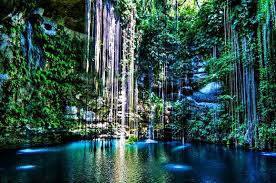

.jpg)
México nos ofrece un mundo lleno de contrastes. Ciudades inmensas, selvas virgenes, volcanes, playas interminables, ciudades coloniales, paisajes diversos, vida silvestre y desiertos impresionantes entre muchas cosas más.
Existe mucho por conocer.
Hay ciertos escenarios seductores para vivir
aventuras en la montaña.
me gusta visitar las montañas,
ver los rios, las cascadas, la flora y la fauna silvestre-
pinos, cedros, encinos, los halcones que vuelan en el
cielo; oír las aves que cantan, correr atrás de algún
venado o algún animalito, respirar el aire fresco y dulce.
Me gusta abandonar la rutina de la ciudad y vivir la aventura de conocer
México con sus hermosas playas doradas de arena que nos invitan
a descansar, a nadar, a hacer locuras imprevistas.
me encanta ir a Acapulco, Cancún, Puerto Escondido o las playas de Huatulco
con mi esposo y mi familia.
Las vacaciones pasadas me fui a Europa y al Reino Unido.
Visité muchos ciudades hermosas e hicimos muchas fotos
digitales. Aqui les muestro mis fotos de Londres, una ciudad
grande sobre el río Támesis. La zona histórica de Londres
está sobre la orilla norte del río, donde también se encuentra
la mayoría de las atracciones turisticas: cabe destacar la Torre de
Londres, la plaza Trafalgar Square y del Parlamento, la abadia de
el palacio de Buckingham o la Catedral de San Pablo.
Regresa al curriculum
Responde mis preguntas.